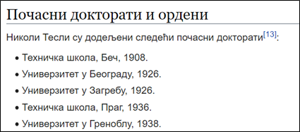

Листе¶
Текст нису само наслови и пасуси. У великом броју случајева потребно је додати и неке листе у текст. У овој лекцији ћете научити како се користе HTML елементи који представљају сложеније текстуалне структуре попут листи.
У овом контексту листа представља низ кратких текстова, који се приказују један испод другог. Листе се користе при набрајању, задавању неких корака, и слично. Погледајмо као пример следећи текст о почасним докторатима које је добио Никола Тесла (преузето са сајта Википедија):
{kind=link}
Докторати које је Никола Тесла добио су кратки текстуални записи које желимо да набројимо у виду листе. Свака ставка у листи се представља елементом <li> (енгл. list item), овако:
<li>Техничка школа, Беч, 1908.</li>
Сви елементи листе се стављају у посебан HTML елемент који означава листу као целину. У HTML језику се за представљање целе листе најчешће користи један од ова два елемента:
<ul>елемент, који представља неуређену листу (енгл. unordered list), у којој се елементи приказују без индексирања. Садржај у оваквим листама се окружује<ul>и</ul>ознакама.<ol>елемент, који представља уређену, односно нумерисану листу (енгл. ordered list), у којој се елементи листе приказују у неком редоследу обележени словима (а, б, ц) или редним бројевима (1, 2, 3). Садржај у овим листама се окружује<оl>и</оl>ознакама.
Имајући у виду ова правила, листа са слике би могла да буде задата помоћу HTML кода овако:
<ul>
<li>Техничка школа, Беч, 1908.</li>
<li>Универзитет у Београду, 1926.</li>
<li>Универзитет у Загребу, 1926.</li>
<li>Техничка школа, Праг, 1936.</li>
<li>Универзитет у Греноблу, 1938.</li>
</ul>
У случају да је потребна листа са бројевима (енгл. ordered list), користили бисмо ознаке <ol> и </ol> уместо <ul> и </ul>, а ставке у листи би и даље биле окружене <li> и </li> ознакама.